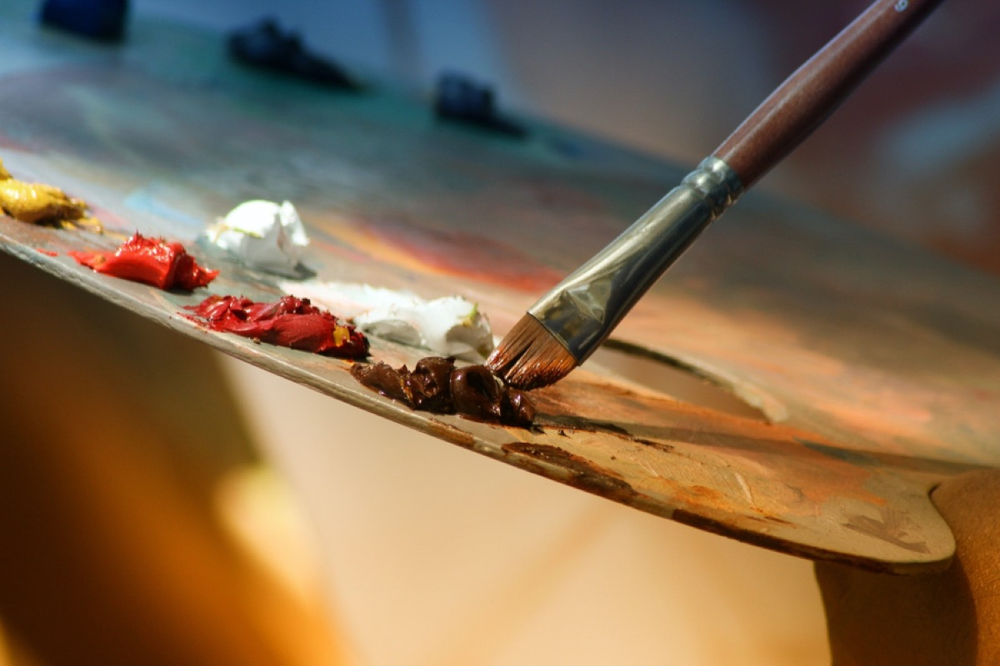
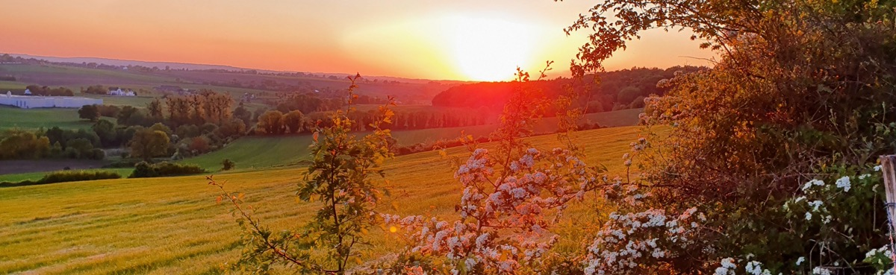
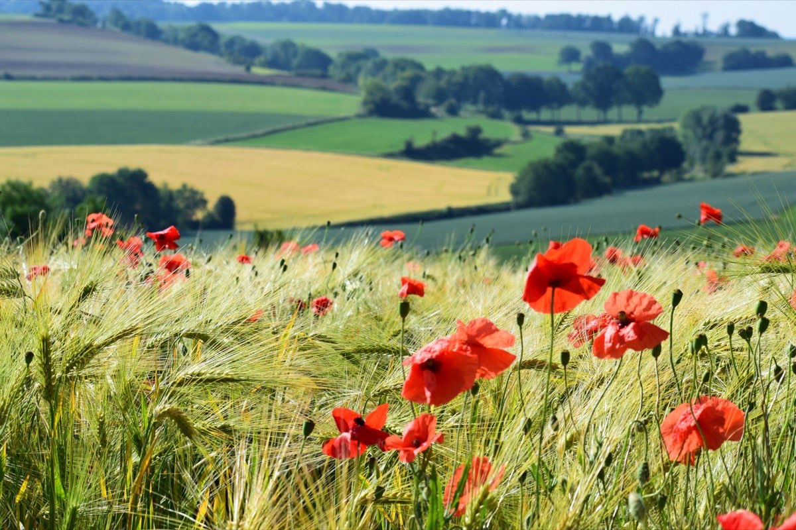
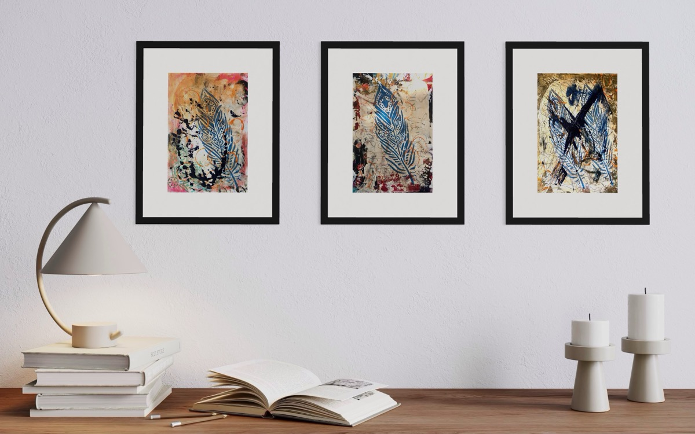
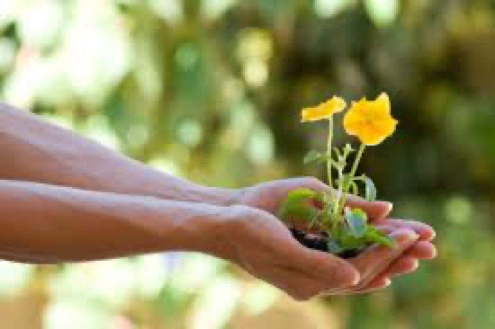

Schilderworkshops
Pak een penseel, laat de regels los. Deze workshops gaan over pure expressie: niet over goed schilderen, maar over vrij schilderen.
Ontdek WorkshopsStap de wereld van Anneke van Tilburg binnen; waar intuïtief schilderen, ecstatic dance en embodied coachen samenkomen in een pad van diepe transformatie.
Drie Werelden
Anneke werkt in de ruimte tussen expressie en stilte, een uitnodiging om te bewegen, te creëren en terug te keren naar jezelf.
Geen regels, geen oordeel; alleen kleur, doek en de vrijheid om uit te drukken wat woorden niet kunnen. Anneke's schilderworkshops zijn een uitnodiging om los te laten.
Als DJ weeft Anneke geluidreizen die de geest ontwarren en het lichaam bevrijden. Van intieme bijeenkomsten tot openluchtfestivals.
Diep luisteren. Eerlijke reflectie. Coaching met Anneke ontmoet je in het lichaam, waar echte verandering begint, en wandelt mee in jouw proces.
Verkennen

Pak een penseel, laat de regels los. Deze workshops gaan over pure expressie: niet over goed schilderen, maar over vrij schilderen.
Ontdek Workshops
Van intieme binnenceremonies tot openluchtfeesten, Anneke creëert geluidreizen die het lichaam bewegen en het hart openen.
Boek Anneke
Een openluchtviering van beweging, vrijheid en wilde vreugde. Dans op blote voeten in de natuur met een gemeenschap die als thuis voelt.
Bekijk Evenementen
Ontdek Anneke's intuïtieve schilderijen: gedurfd, emotioneel, levend. Elk stuk houdt een wereld. Originele werken beschikbaar.
Betreed de Galerie
Diep luisteren. Eerlijke reflectie. Belichaamde wijsheid. Coaching met Anneke ontmoet je waar je bent en wandelt met je mee.
Ontdek CoachingWat mensen zeggen
"Werken met Anneke veranderde hoe ik mezelf zie. Haar schilderworkshop opende iets in mij wat ik niet wist dat gesloten was. Ik vertrok met verf op mijn handen en meer ruimte in mijn hart."
"Dansen op een van Anneke's Boerderijdansen voelde als thuiskomen in mijn lichaam. De muziek, de setting, de energie: pure geneeskracht. Ik wilde niet dat het stopte."
"De coachingsessies met Anneke gaven me tools die ik elke dag gebruik. Ze ziet je diep, zonder oordeel, en weet precies welke vraag ze moet stellen."
Volg de reis
Blik achter de schermen van het atelier, de dansvloer en alles daartussenin. Vind haar op Instagram en LinkedIn.